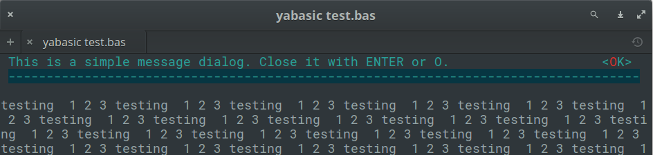

clasquinator
This folder contains a library for yabasic that allows yabasic to display a variety of dialogs in text mode without making use of external commands.
Some routines will also be made available in graphics mode, but keep in mind that you only have one graphics window to play with. if you use these, you will not have the graphics window for your own use.
The library is written as a textmode application and must be run in a terminal. It will not be useful in a headless script.
The entire set of libraries focuses on sane defaults and getting basic functionality into yabasic.
The images below are for illustration only. The exact appearance of the dialogs will depend on your system settings.
Developed on elementary OS 0.4 "Loki" (i.e. Linux), but it should work on any *NIX system that will run yabasic. I don't have a Windows machine to test this on, so please let me know if anything works/doesn't work on that side.
The library should exist either in the same folder as your program (symlinks work) or in the standard yabasic library location on your system.
To use the library, use the command
import clasquinatorlib
You should not use this library and one of the others in this set that provides dialogs concurrently, because they replicate subroutine names. Pick the right one for your program and stick with it!
Unlike the other libraries, you cannot use \n to break a line in your text variables. Keep that in mind if compatibility between the libraries is important.
By default, widgets are drawn in cyan, with button and menu triggers in red. But you can override this by setting the GLOBAL variables menu_colour$ and trigger_colour$.
The colours available are the normal ones yabasic can handle, namely "black", "white", "red", "blue", "green", "yellow", "cyan" and "magenta" (which can be abbreviated as "bla", "whi", "red", "blu", "gre", "yel", "cya" and "mag" respectively). The library does not check if the two colours are identical, or if they complement each other visually. If you want to make your menus unreadable, more power to you!
The background colour of widgets is always black, but your program's colours will be restored to whatever they were before.
The "buttons" are not mouse-aware.
The first letter of each button or menu item automatically becomes the trigger. Both lower and upper case variants will activate it. It is up to you to ensure that you do not use menu items that start with the same letter.
Hint: You can always number them, e.g.
menuitem1$ = "1.File"
This will make the menu react to the "1" key being pressed, rather than "f" or "F".
If the text of a message (usually in the variable text$) is too long to fit in one line, it will be truncated. This may vary with the width of the user's terminal window, so be conservative!
Excessive quote marks (required in other libraries and often supplied by EncloseText$() or \"\") will be removed by the library to maintain compatibility. Excessive spaces at the front and back of text$ will be trimmed, but multiple spaces within text$ will be maintained.
This library is currently still in the development stages and not really usable. But watch this space!
Routines available:
This library poaches as many ideas as possible from the other four dialog-providing libraries, but there is not 100% compatibility here, so we will not divide things into Common and Clasquinator-specific sections.
ClearDlg() - on dialog and whiptail, this clears the dialog from your terminal. Same as the yabasic command CLEAR SCREEN, but may work better if you are expecting to issue another Linux command immediately. On zenity, clasquinator and kdialog, dummy routines are provided for compatibility so that you do not need to rewrite your code.
EncloseText$(thestring$) - A simplified version of the EncloseString$() routine that can be found in the linuxmisclib library
- Not required in clasquinator, where only a dummy routine is provided for compatibility.
getcmd$() - returns the command set available.
- This is really just for me, to stop me from getting confused while I am editing four libraries simultaneously.
- However, you could use it to test which utility (or library, in the case of clasquinator) is currently in use and if it is safe to use routines not in the common list.
- e.g, if getcmd$() = "clasquinator" SubmenuDlg(options ....)
- or if getcmd$() = "zenity" ZNotifyDlg("this is a notification")
InputDlg$(text$, title$, ok$, cancel$) - Presents a one-line dialog into which the user can type a string answer.
- The value title$ is the title on top of the widget
- The values ok$ and cancel$ are not used in clasquinator and may be omitted. They are kept in the code for compatibility reasons.
- ENTER accepts the input, which can also be an empty string.
- The empty string counts as the equivalent of a cancel button.
- The result is returned as a string value.
- Example:
a$ = InputDlg$("What is your name?", "Who are you?")

MenuDlg(text$, title$, ok$, cancel$, menustring$) - Create a menu of options for the user to choose from.
MessageDlg(text$, ok$) - Display a simple message with an OK button.
- The value ok$ is the text of the accept button, normally OK.
- You only have one line to play with, so keep those messages short!
- Returns nothing, therefore does not actually trap the keypress. But the trigger is highlighted to ensure uniformity among the library's widgets
- Example:
MessageDlg("This is a simple message dialog. Close it with ENTER or o.","OK")

PasswordDlg$(text$, title$, ok$, cancel$)
- Supplied for compatibility purposes, but here it is just an alias for InputDlg() - inputs are not obfuscated with asterisks.
RadioDlg(text$, title$, ok$, cancel$, menustring$, selected$) - Create a menu of options for the user to choose from.
SubmenuDlg(text$, title$, ok$, cancel$, menustring$) - Create a secondary menu of options for the user to choose from.
TestForDialogUtility$() - Routine to test if the called utility actually exists on the system. An empty string returned means it does, otherwise an error message is returned.
- in clasquinator, this is a dummy routine provided for compatibility. It will always return an empty string.
TextFileDlg(filename$, title$, exit$) - Displays a text file.
YesNoDlg(text$,yes$, no$) - Displays a dialog with text (normally a question) and the options to reply yes or no.